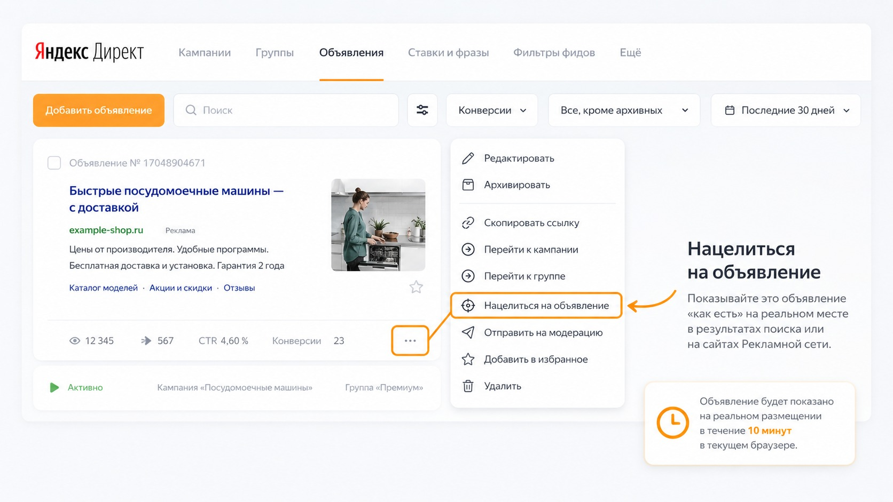

Блог о платном трафике
Как посмотреть объявление в Яндекс Директ
Посмотреть свое объявление в Яндекс Директе можно двумя способами: через предпросмотр в рекламном кабинете или непосредственно на площадке, где оно может показываться. А вот постоянно искать собственную рекламу по ключевым фразам в поиске Яндекса - плохой способ проверки.
Если вы не видите свое объявление в поисковой выдаче, это еще не означает, что реклама не работает. Яндекс проводит отдельный аукцион для каждого показа и учитывает параметры конкретного пользователя. Более того, частые поиски собственной рекламы без кликов могут привести к тому, что система начнет реже показывать объявление именно вам. Яндекс прямо приводит подобную ситуацию в своей справке.
Как посмотреть объявление в интерфейсе Яндекс Директа
Самый простой вариант - использовать встроенный предпросмотр.
В Единой перфоманс-кампании внешний вид рекламы настраивается на уровне объявления. Здесь же доступен его предпросмотр.
Обычно порядок такой:
- Откройте Яндекс Директ.
- Перейдите в нужную рекламную кампанию.
- Откройте раздел с объявлениями.
- Выберите нужное объявление.
- Посмотрите блок предпросмотра.
В зависимости от типа рекламы Директ показывает доступные варианты ее отображения. Это позволяет заранее оценить заголовки, текст, изображения, быстрые ссылки и другие элементы.
Предпросмотр особенно полезен во время создания объявления. Можно сразу заметить слишком длинный текст, неудачно обрезанную картинку или сочетание элементов, которое выглядит хуже, чем предполагалось.
Но это именно предварительный просмотр. В реальной выдаче внешний вид может отличаться в зависимости от места размещения, устройства и набора элементов, который Яндекс выберет для конкретного показа.

Как посмотреть свое объявление на реальной площадке
Для активных объявлений в Директе есть более интересный инструмент - «Нацелиться на объявление».
Он предназначен именно для ситуации, когда нужно увидеть рекламу не внутри редактора, а непосредственно там, где она может показываться.
Нужно открыть объявление со статусом «Идут показы», выбрать функцию «Нацелиться на объявление» и разрешить использование cookie. После активации нацеливание действует в текущем браузере в течение 10 минут.
Это хороший способ проверить баннеры РСЯ в реальных условиях: посмотреть размер блока, обрезку изображения, текст и другие элементы.
Для специалиста это гораздо полезнее, чем просто смотреть макет внутри кабинета.

Можно ли найти свое объявление через поиск Яндекса
Можно. Вы можете открыть Яндекс, ввести запрос, по которому настроена рекламная кампания, и посмотреть рекламную выдачу.
Но использовать этот способ как проверку работоспособности рекламы не стоит.
Типичная ситуация выглядит так:
Вы запустили рекламу по запросу «купить пластиковые окна», открываете Яндекс, вводите эту фразу и не находите свое объявление. Потом повторяете запрос несколько раз, меняете формулировку, заходите с другого браузера - а рекламы все равно нет.
Из этого часто делают неправильный вывод: «Я плачу за Директ, а меня вообще не показывают».
На самом деле ваше отсутствие в собственной выдаче ничего не доказывает.
Почему я не вижу свое объявление в Яндекс Директе
Поисковая реклама не работает по принципу «добавил ключевую фразу - теперь объявление появляется у каждого пользователя при каждом таком запросе».
При каждом поиске проводится новый рекламный аукцион. На результат влияют настройки кампании, ставка, качество объявления, доступный бюджет и параметры конкретного показа. Яндекс также не гарантирует рекламодателю постоянное нахождение на определенной позиции.
Есть несколько распространенных причин, почему именно вы не увидели рекламу.
Вы слишком часто проверяете свое объявление
Это одна из самых интересных причин.
Если человек регулярно вводит один и тот же коммерческий запрос, видит объявления определенной тематики, но не кликает по ним, алгоритм получает сигнал, что эта реклама ему неинтересна.
В официальной справке Яндекс приводит практически такой же пример: если рекламодатель часто просматривает выдачу, проверяя позицию своего объявления, алгоритм может спрогнозировать низкую вероятность клика и перестать показывать ему это объявление в блоке премиум-показов.
Поэтому ситуация, когда клиенты видят вашу рекламу, а вы сами ее не видите, совершенно нормальна.
Поисковая выдача предназначена для пользователей, а не для контроля рекламной кампании владельцем бизнеса.
Объявление участвует не во всех аукционах
Даже работающая кампания не обязана показываться при каждом подходящем запросе.
Алгоритму необходимо распределять рекламный бюджет, учитывать стратегию и выбирать показы, которые с большей вероятностью принесут нужный результат.
Поэтому между двумя одинаковыми запросами, сделанными разными людьми или даже одним человеком в разное время, набор рекламы может отличаться.
Как работает Яндекс Директ: простое объяснение для новичков.
Вы находитесь не в том регионе
Если группа настроена, например, только на Москву, а вы проверяете рекламу из другого города или используете VPN, условия показа могут не выполняться.
То же самое относится к расписанию. Если объявления работают только в определенные дни или часы, вне этого периода вы их не увидите.
На вас действуют корректировки и настройки аудитории
Ваш профиль может просто не соответствовать части настроек рекламной кампании.
На показы способны влиять параметры аудитории и корректировки, поэтому владелец бизнеса и его потенциальный клиент находятся для алгоритма в разных условиях.
Реклама находится не там, где вы ее ищете
Объявления на поиске могут размещаться не только в самом верхнем рекламном блоке. Яндекс указывает, что реклама также может появляться в середине и нижней части результатов поиска.
Поэтому отсутствие объявления на первой позиции или вообще в верхней части страницы также не говорит об отсутствии показов.
Почему режим инкогнито не решает проблему полностью
Часто советуют открыть браузер в режиме инкогнито и снова выполнить запрос.
Это может уменьшить влияние части накопленных данных браузера, но не превращает выдачу в абсолютно нейтральную.
Режим инкогнито не гарантирует, что Яндекс перестанет учитывать все параметры пользователя, включая его местоположение и особенности поискового поведения. Поэтому даже такая проверка не показывает, что видят все остальные пользователи.
Если очень хочется один раз посмотреть свое поисковое объявление глазами пользователя - сделать это можно. Но десятки раз обновлять выдачу и искать себя по всем ключевым словам смысла нет.
Как правильно проверить, показывается ли объявление
Если задача не посмотреть дизайн, а убедиться, что реклама действительно работает, проверяйте статистику Яндекс Директа.
Откройте кампанию или Мастер отчетов и посмотрите показы за нужный период.
Если у объявления есть реальные показы, значит оно участвовало в выдаче или размещалось на площадках независимо от того, удалось ли вам лично его найти.
Логика проверки простая:
- хотите проверить внешний вид при настройке - используйте предпросмотр;
- хотите увидеть активное объявление на площадке - используйте «Нацелиться на объявление»;
- хотите понять, идет ли реклама на самом деле - смотрите статистику показов;
- хотите оценить результат рекламы - анализируйте клики, конверсии и стоимость целевых действий, а не наличие собственного объявления у себя на экране.
Именно статистика рекламного кабинета должна быть основным источником информации о работе кампании.
Что делать, если показов действительно нет
Другая ситуация - когда объявления отсутствуют не только в вашей выдаче, но и в статистике Директа.
Тогда уже нужно искать причину.
Проверьте:
- активна ли рекламная кампания;
- имеет ли объявление статус «Идут показы»;
- пройдена ли модерация;
- есть ли доступный бюджет;
- не ограничено ли расписание показов;
- подходит ли выбранная география;
- работают ли заданные условия показа;
- нет ли предупреждений в рекламном кабинете.
Яндекс отдельно отмечает, что слишком маленькое соотношение недельного бюджета или остатка средств к ставкам может делать показы нестабильными.
Если статистика показывает ноль и очевидной причины найти не удалось, тогда уже имеет смысл заниматься диагностикой кампании, а не обновлять поисковую выдачу.
Итог
Чтобы посмотреть свое объявление в Яндекс Директе, используйте встроенный предпросмотр или функцию «Нацелиться на объявление».
Проверять поисковую рекламу постоянным вводом собственных ключевых запросов не нужно. Выдача формируется индивидуально, а регулярные показы без кликов могут привести к тому, что алгоритм станет реже показывать вашу же рекламу именно вам.
Если нужно убедиться, что кампания работает, главный ориентир - статистика показов в Яндекс Директе, а не то, увидели вы себя в поиске или нет.